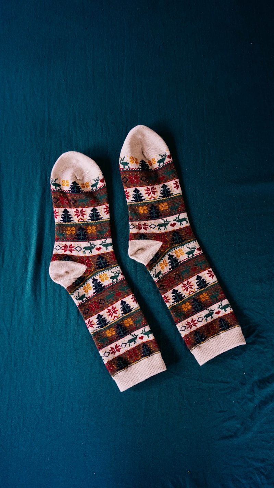

[ STUDY RESEARCH // ARCHIVES ]
Stride comfort logs, knit density calibrations, & heel friction curves.
A structured collection of technical articles on sock knit spacing, arch compression scales, and running stride comfort tests.
Calibration // Seam density
Atelier Knits: Loop Density Spacings
How loop clearances and yarn elasticities prevent seam sags along heel boundaries.
Read Log
Caliber // Compression
Sock Arches: Spandex Wraps
Measuring elasticity recovery variables under walk cycles to protect feet from fatiguing.
Read Log
Caliber // Slide Friction
Yarn Slides: Heel Friction Curves
Evaluating yarn slide decay coefficients and thread coatings to prevent heel heat sags.
Read Log
Material // Wool quality
Merino Wool: Insulation Limits
Measuring air pocket warmth capacities inside woolen socks to prevent heat drops during winter bakes.
Read Log
Stitching // Slipper comfort
Cozy Slippers: Cushion Thicknesses
How foam density metrics and wool linings hold arch bones cleanly against hard floor panels.
Read Log
Looming // Knit wraps
Sock Looms: Needle Calibrations
Measuring wrap speed alignments and spool friction loads to protect yarn loops from tearing.
Read Log